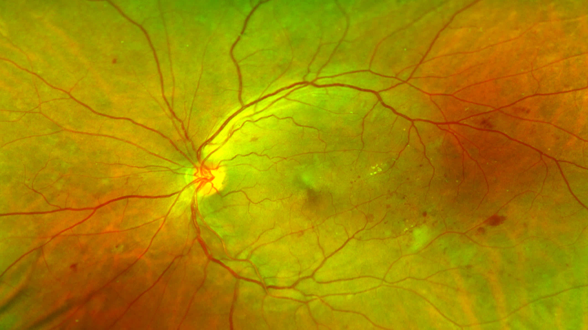
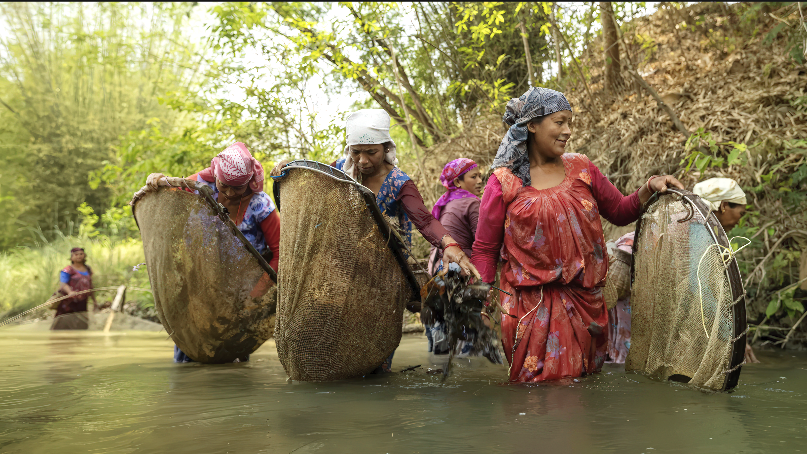
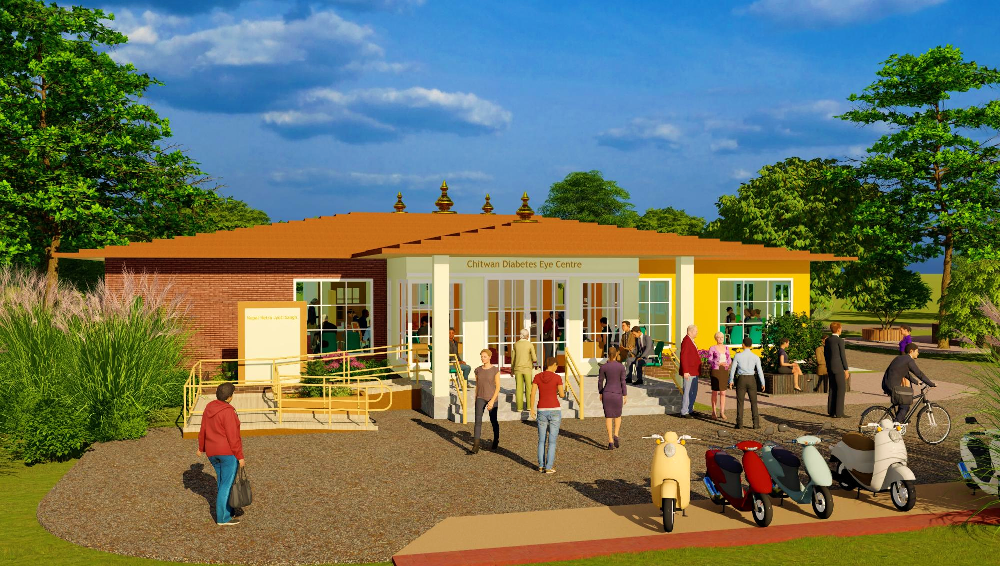
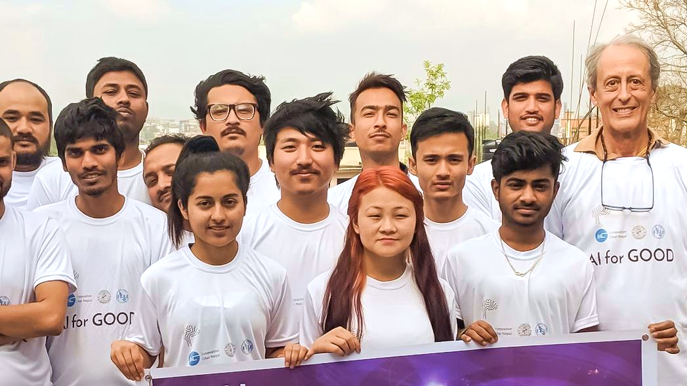

At the edge
Frontline workers
Equipped with AI-ready devices, they screen, educate consumers about their own health, and explain the benefits of participating in recommended treatment.
Global healthcare platform
Billions of people still face limited access to effective, affordable medical care. SocialEyes MANGO is the first AI-driven platform built to screen, diagnose and help manage dozens of conditions at the scale that problem actually requires.


…where billions of people still face limited access to effective and affordable medical care.
SocialEyes MANGO is the first AI-driven healthcare platform specifically designed to solve fundamental aspects of this global problem. SocialEyes AI can screen, diagnose and help manage dozens of conditions, and do so economically at the truly massive scale required.
What if MANGO's AI-first strategy could boost effective coverage for a wide range of diseases, just about anywhere — without requiring major capital investment or retraining?
01 Challenges
Chronic, lifestyle-related illness now dominates the healthcare burden in low- and middle-income countries — and conventional networks were never built for it.

And it does so even in rural areas. This is a radical change from just 20 to 30 years ago. By 2040, around 1 billion people worldwide are expected to have diabetes — one-third of them in South Asia alone. They are also at risk of silently developing serious visual impairment, even during their working years.
Conventional healthcare networks are not prepared for this new reality, especially in the conditions prevailing across typical low-resource countries.
Could SocialEyes AI screen a billion people a year for potential diabetic eye disease? Yes — non-invasively, immediately, at the point of care, for negligible marginal cost.
Youngsters in South Asia now have almost a 50% lifetime risk of developing diabetes. In some cities, 22% of those over 30 already have diabetes and 40% have hypertension. Relatively few can be diagnosed or treated in a timely manner.
Other chronic conditions such as kidney disease and COPD are also rampant — and unfortunately, most people often have more than one.
How could AI make new levels of care available almost anywhere, even for those living at the edge, beyond the reach of conventional healthcare?

In LMICs, patients often present with progressed illnesses. With diabetic eye problems, once a person begins to notice visual deterioration and decides to seek care, they may already have severe or even proliferative retinopathy. Treatment is expensive; chances of a positive outcome are limited.
The overall social and economic costs are enormous and rising continually. In Nepal, almost the entire national healthcare insurance budget is consumed by treating chronic kidney disease, with little left to spend on the rest of the population.
Why is routine screening and timely diagnosis so difficult to obtain? Several social, structural and economic factors contribute.

The Nepali people are still 60–70% rural, typical for much of South Asia; there are almost no local doctors serving them.
Thousands of trips a day must be made to distant district and national hospitals for diagnosis, sometimes unnecessarily. Roads can be impassable for weeks on end. Many cases eventually turn out to be normal or relatively low-risk, which discourages people from coming back.
Subsidies are limited, and participation in government national insurance schemes is only a fraction of desired levels. Many consumers don't bother renewing their policies.
Most towns and market centres (green dots) are hours away (yellow, orange and red areas) from hospitals (large squares) and clinics (small squares).

Transiting typical South Asian urban centres — most laid out in medieval times — can easily take an hour or more, given frequent traffic jams as well as months of monsoon rains.
Initial assessment of possible diabetes-related eye disease often requires two or three appointments, each taking half a day or more including waiting time in crowded facilities, and transit. This routine runs up a substantial bill.
Not surprisingly, even in capital cities, effective coverage is perhaps 10%, maybe less. Chronic disease cases are already overwhelming existing facilities, which lowers quality of service and certainly frustrates consumers.
In the past 20+ years, the population of Kathmandu has tripled and shifted an hour or more away from existing eye hospitals. Diabetes prevalence heatmap compiled from a recent RAAB survey (NNJS and IAPB, 2024).

Access to competent, locally available, affordable care lags far behind overall social and economic progress in the region.
Consumer preferences, expectations and behaviour are much different from even ten years ago. Newfound purchasing power, mobile banking and remittance transfers could transform healthcare delivery; providing services as essentially a consumer product could be a more reliable source of funding than government budgets, charitable giving or aid.
What if AI-enabled services offered as much perceived value, and scaled as easily, as Amazon or Netflix? Access to care could be just a QR code away.
02 Solutions
And that's not likely to be in a conventional hospital or clinic.

Manufacturing capacity
SocialEyes MANGO increases access to care from remote, rural communities to densely populated inner-city neighbourhoods. In effect, it manufactures healthcare capacity where none exists.
MANGO in some important ways resembles social networks and online merchandising: it makes low-cost goods and services widely available to the public, while accumulating large amounts of consumer behaviour and demographic information.
AI at the point of care
An illustrative look at the triage output produced while screening a queue at an outreach camp.

Each patient dataset is encrypted and biometrically tagged, ensuring privacy while enabling immediate retrieval at every visit to a SocialEyes-equipped location.

…along with continuously reporting performance indicators such as disease incidence, waiting times, throughput, outcomes and revenue.
Centralised monitoring and quality control using AI-enabled tools helps optimise safety and effectiveness. If there's a sudden surge in cases, public health authorities know immediately, before an outbreak can become a major crisis.
Presently, epidemiological data collection and reporting are usually after-the-fact, and sometimes results are delayed for years. With SocialEyes, users know who has what, where, and probably why, 24/7.
Red circles reflect the number of cataract cases per sample site; blue circles indicate prevalence of diabetes and associated eye diseases in Bagmati Province, Nepal (NNJS and IAPB, 2024).
03 Platform
MANGO bridges the gaps between primary care and tertiary services by pushing specialist skills out to the edges.

Every level of care needs a tailored range of AI-mediated skills. Those suitable for village aashas and urban neighbourhood clinics identify potential at-risk cases early, getting them into the healthcare pipeline before serious complications arise. This front end is the first step to improving effective coverage, using AI to help deliver better care everywhere, and at scale.
Equipped with AI-ready devices, they screen, educate consumers about their own health, and explain the benefits of participating in recommended treatment.

MANGO gives primary care physicians and nurses a variety of new AI-enabled diagnostic skills, letting them provide better care much closer to where people live.

Advanced diagnostic and decision support tools let specialists spend more of their time serving the patients who need their highest and best skills.
Built to scale
Illustrative hub clinics, outreach camps and mobile teams across a SocialEyes network, all pooling information via secure networks.

MANGO establishes a horizontal, geographical continuum of care: from conventional fixed-base facilities to mobile teams running outreach camps in villages and urban neighbourhoods. All deliver consistent, quality services, pooling the resulting information via secure networks.
MANGO also enables a continuum of care over time. Millions of multi-modality, longitudinal, curated datasets let SocialEyes AI analytics identify clinical subgroups, mass-personalise care, and continuously improve system performance and efficiency.
Unlike conventional healthcare, SocialEyes thrives on scale: the more people in the system, the better the results for all.
04 Technology
Starting with ultra-wide-field retinal scans — an underused window onto the whole body.

Each AI-ready dataset from an ultra-wide-field retinal scan captures a wide range of conventional disease signatures along with a variety of abstract, quantitative parameters which drive advanced AI tools and capabilities.
Both visible and latent parameters are collected, not just colour and depth. These form the inputs to SocialEyes AI classifiers and language models, which evaluate relevant clinical findings, suggest diagnoses, and provide granular, personalised decision support.
SocialEyes PACS infrastructure can readily accept other imaging modalities such as ultrasound, X-ray, CT and MRI. These contribute to even better diagnostic accuracy, and are a natural path for extending the MANGO platform into the broader arena of general care.

The retina is an extension of the brain. Its fine capillaries and nerves can be easily damaged by diseases such as diabetes and hypertension, which affect the vascular system.
Next-generation SocialEyes MARVEL scanners, now under development, generate first-in-the-world multimodal hyperspectral datasets from the retina and other tissues.
These in turn inform portable personal language models representing the medical condition and history of each consumer. That information is used to build and query population-scale large language models which deliver in-depth recommendations.

Their performance typically exceeds current standards of care, based on evidence gathered from a 23,000+ person US retrospective registry pilot.
SocialEyes AI is generalised: it will detect ophthalmic maladies as well as many systemic conditions such as kidney failure, cardiovascular disease, hypertension and COPD.
SocialEyes is also pioneering continuous, precision predictive variables that show trends and early onset of disease, potentially long before categorical changes manifest.
This heatmap shows moderate, non-proliferative diabetic retinopathy (NPDR). Risk of progression at this stage is often high, requiring follow-up assessment and referral to tertiary care.

This ensures consistent, high-quality medical records which accurately reflect clinical conditions in the field.
Automated and largely autonomous assessment skills screen for relevant risk factors, and assess an open-ended range of the infectious, genetic, physiological and mental illnesses prevalent in a given public health ecosystem.
Over time, accumulated datasets and analytic tools continually improve system performance. Increasing accuracy, at scale, results in thousands of additional people being diagnosed correctly and reported every day.
Open-ended coverage
SocialEyes AI assesses risk factors alongside infectious, genetic, physiological and mental illness, and standardises ICD-10 coding right from the mobile device.
ICD-10
Manual logging of ICD codes is time-consuming, difficult and frequently avoided. Selecting which of the 23,000+ possibilities to use is a task few enjoy.
SocialEyes builds this in right from the mobile device, which helps frontline workers report incidence information accurately. It also lays the foundation for global health research and clinical trials, an important source of expertise and revenue. Every region using SocialEyes generates information the same way, which allows meaningful comparison between different areas.
05 Social benefits
Beyond raising effective coverage, SocialEyes transforms the workforce so it aligns realistically with the public health challenges at hand.

SocialEyes will be operated primarily by thousands of young women — typically high-school graduates with three or more years of formal training, plus new electives on chronic disease and AI skills. This is a strong in-country career opportunity that brings social and economic benefits to the nation.
Healthcare and ophthalmic assistants can be trained relatively quickly and inexpensively compared with physicians, let alone specialists. With SocialEyes AI, they can play a major role in reducing the rising burdens caused by chronic disease.

MANGO is inherently well suited to communities such as the two million-plus Tharu people living along the southern border areas of Nepal.
They have almost no access to medical care but are at high risk of debilitating sickle cell anaemia and related blood diseases. With SocialEyes AI screening and genetic counselling of adolescents, there is a way forward to better health for the entire community — as well as for even larger at-risk populations in India and Africa.

These drive the intensity of seasonal disease epidemics, as well as causing them to appear in new areas, typically without adequate medical resources.
Changing patterns of rainfall, habitation, transportation and temperature, as well as dramatically increasing pollution even in the hinterlands, are already radically altering the healthcare landscape.
SocialEyes AI lets public health agencies anticipate and visualise what's happening, so they can take mitigating steps before a situation gets out of control.
06 Experience
Open, inviting, comfortable buildings with responsive, well-equipped staff — because a positive consumer experience is not a luxury, it is what brings people back.

SocialEyes AI clinics create a healing environment for all who visit and work in them. Open, inviting, comfortable buildings with responsive, well-equipped staff are essential for ensuring a positive consumer experience.
The SocialEyes built environment even has a low emission profile. Extensive use is made of engineered timber products and other natural materials from the region, which produce a negligible carbon footprint throughout the building lifecycle.

The staff, skills and equipment needed for initial assessment and routine management are now all in one location. This approach greatly reduces operating costs, as well as time and out-of-pocket expense for consumers, compared with the conventional referral workflow.
SocialEyes has already developed extensive digital-twin operational performance and financial models for multi-site MANGO healthcare networks. These models suggest that AI-mediated medical services could be delivered for as little as one-tenth the cost to consumers compared with existing methods.
That is a major step change in the underlying healthcare economics.

Flexible, open floor plans and a circular, workstation-focused flow allow collaboration and higher throughput. The consumer experience is radically better than at existing healthcare facilities.
Integrated telemedicine consultations bringing in expert advice are available inline, for handling complex cases before a person leaves and potentially becomes lost to follow-up.
Continuing contact while at home is critical. The staff includes social workers who can help with logistics, as well as coordinate locally available resources.

Many people are simply not aware they could do more to improve their health — if they knew what to do.
Line physicians must handle an enormous number of cases every day, which limits the opportunity to answer questions. Those in their care are often deferential and reluctant to discuss concerns or options.
Management of chronic disease is further complicated by the fact that many cases have multiple conditions. Well-informed consumers can be a major positive factor in achieving better outcomes.

Whenever someone comes to a SocialEyes AI facility, routine retinal-image-based biometric authentication confirms their identity, and their records are immediately available for review.
Presently, almost all healthcare information — images, lab reports, hand-written notes — is handed over to the patients, who save these materials in cardboard folders or plastic envelopes.
If they are lost or damaged, the entire process has to start over. And the knowledge from millions of cases is unavailable.
07 Connect
Successful innovation requires healthcare leaders across the region who guide change management and organise large-scale, million-person deployments.

Large-scale deployments help demonstrate the broad range of benefits for consumers, providers, local and national governments, as well as other stakeholders.
SocialEyes principals already have decades of on-the-ground experience across the region, resulting in trust relationships with clinical networks, local and national governments, along with the NGOs.
Starting from the eye care issues caused by chronic disease and other conditions, SocialEyes and its partners will gradually expand into general care hospitals and clinics.

These facilities combine an active in-house clinic, open to the public, with academic education, training, and incubator resources for student research projects.
They will also house national and regional AI telemedicine centres, along with platform administration and help desks — for consumers as well as for the institutional users of SocialEyes data analytic services.

…and the rest of the LMIC world. SocialEyes staff, interns and associates come from many countries, and represent a wide range of social and educational backgrounds.
Healthcare assistants, doctors, computer engineers, environmental scientists, lawyers, teachers, nurses, social workers and entrepreneurs can all make meaningful contributions.

Whether you lead a clinical network, work in public health, fund development, or want to build the technology — tell us where you fit and we'll be in touch.
SocialEyes is AI for good.
SocialEyes●AI
Global healthcare platform